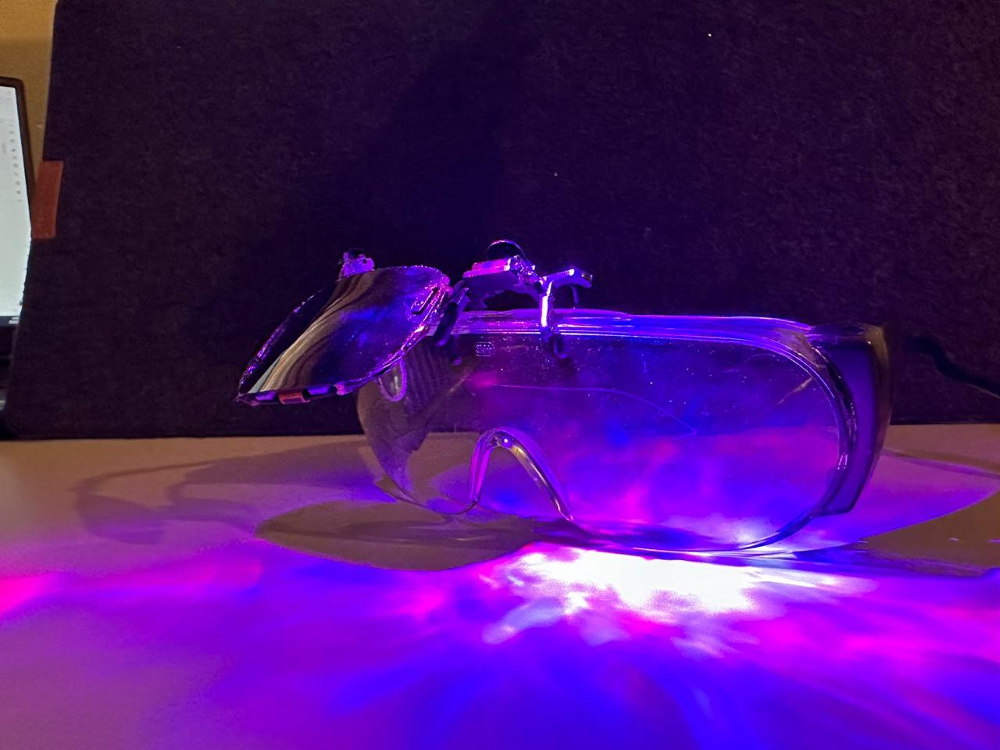

MonoScribe
Smart City
Eldify
Smart Street Light
Startup
Industrial AI Glasses
SPINE
×
MonoScribe

MonoScribe is more than just a speech-to-text device — it's a breakthrough in inclusive communication for the deaf and mute community.
The system is built with two main functionalities: a real-time offline speech-to-text converter using mobile phone integration, and a smart glove that interprets sign language gestures into readable text.
The prototype uses an ESP8266-based display interface and Bluetooth-enabled glove sensors, making it compact and wearable. So far, I’ve successfully built the hardware for both modules, demonstrated real-time text display using an external mic input, and achieved stable glove gesture translation using flex and IMU sensors.
What’s left is perfecting the offline speech-to-text integration using GBoard’s capabilities and syncing it with the ESP module for consistent, fast performance.
The bigger goal is to make this a deployable, affordable tool for schools, hospitals, and everyday users — and that vision is well on track.
×
Smart City

Smart City is my vision of what urban automation should look like — efficient, scalable, and secure. Developed under the guidance of CEER and built using Arduino, ESP boards, and IoT sensors, this project brings together automated street lights, traffic control systems, and basic surveillance using embedded communication. It's been shortlisted in national-level hackathons for its completeness and real-world utility. The entire system works on modular nodes — each responsible for tasks like motion-based lighting or vehicle-based traffic signaling — and they communicate over an ESP-based network. I’ve built working prototypes for each module and integrated them for demonstration at campus exhibitions. What’s pending is a central dashboard interface for real-time city monitoring and exploring low-power mesh networking to scale it further. The plan is to refine this into a city-wide testbed model and possibly pitch it to municipal innovation grants.
×
Eldify

Eldify is close to my heart — it’s a system that protects the most vulnerable segment of society: the elderly. It’s a fall-prevention and motion-monitoring device that uses motion sensors, gyros, and basic AI models to detect abnormal activity or falls in real-time. The initial prototype is built with a combination of ESP32, accelerometer/gyroscope modules, and a GSM module for alert systems. Progress-wise, I’ve built the base hardware, trained the motion data model to recognize fall signatures, and achieved alert transmission via SMS. What remains is refining the false positive/negative rates and creating a companion mobile app to receive real-time alerts, activity logs, and health insights. I believe Eldify could be a core component in smart homes and aged-care facilities, ensuring independence without compromising safety.
×
Smart Street Light - LuminaSense

This project is where I started understanding the beauty of combining simple sensors with purposeful automation. The Smart Street Light System is built using Arduino and PIR motion sensors, enabling it to detect motion and automatically turn on or off based on real-time street activity. The main goal was energy efficiency and cost-effectiveness, especially for rural or developing areas. I’ve built a fully working prototype that responds to motion with a delay buffer and light intensity control, and it runs on battery-solar integration. It's a simple idea but with wide implications, especially when installed across longer city roads. The system’s working fine, but the next steps include building a mesh-network version that can communicate light activity between poles and dynamically adjust brightness based on traffic flow or emergency routing.
×
Startup

What started with MonoScribe has grown into something bigger — my startup journey. The goal of our startup is to create accessible, affordable tech solutions for real-world challenges. Our team (college friends and tech enthusiasts) is currently in the MVP development stage, testing MonoScribe as the flagship product while also planning a roadmap for Eldify, Industrial AI Glasses, and future spin-offs. We've started building a brand, documented use-cases, and even begun pitching for early-stage incubation and mentorship programs. What’s next is finalizing legal structure, refining our business model, and entering early user testing phases with NGOs and assistive tech communities. This startup is not just about building tech — it’s about building a legacy of purpose-driven innovation.
×
Industrial AI Glasses

What started with MonoScribe has grown into something bigger — my startup journey. The goal of our startup is to create accessible, affordable tech solutions for real-world challenges. Our team (college friends and tech enthusiasts) is currently in the MVP development stage, testing MonoScribe as the flagship product while also planning a roadmap for Eldify, Industrial AI Glasses, and future spin-offs. We've started building a brand, documented use-cases, and even begun pitching for early-stage incubation and mentorship programs. What’s next is finalizing legal structure, refining our business model, and entering early user testing phases with NGOs and assistive tech communities. This startup is not just about building tech — it’s about building a legacy of purpose-driven innovation.
×
SPINE - Exoskeleton

SPINE (String Powered Intelligent Neuromuscular Exoskeleton) is one of my proudest creations — a wearable exosuit meant for rehabilitation and prosthetics. Built using string-actuated joints controlled via servo motors and feedback sensors, SPINE helps users regain motion by mimicking natural limb movement. So far, I’ve built a functional prototype for the arm, designed the joint control using Arduino and load sensors, and tested motion patterns with rehab volunteers. The system uses lightweight materials and can be customized for different users. What’s next is integrating real-time EMG signal interpretation for muscle-based control, and designing a wearable dashboard that gives progress metrics to both doctors and users. With further R&D, SPINE could evolve into a full-body assistive suit for patients recovering from stroke, injuries, or neurological conditions.